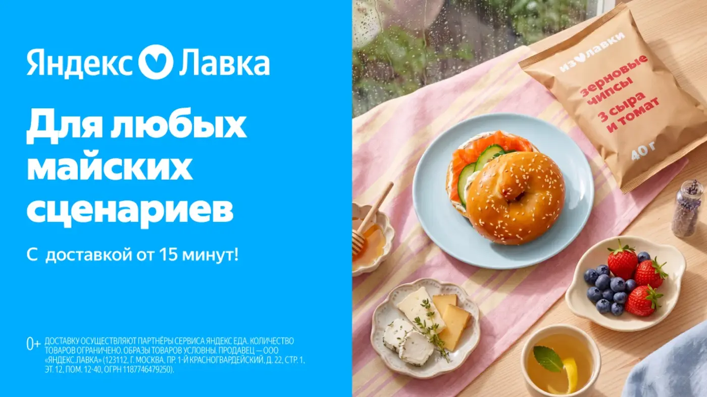
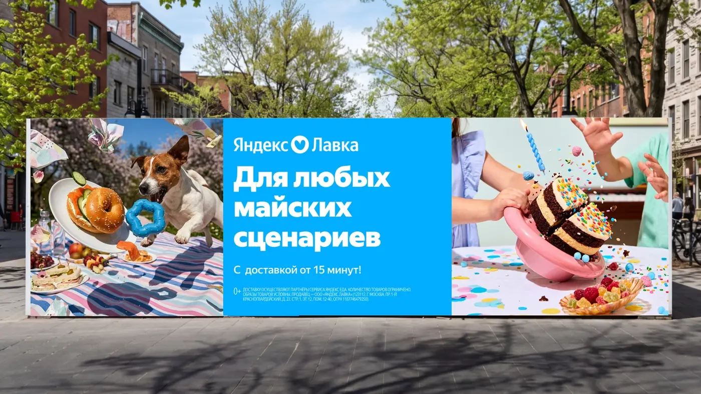
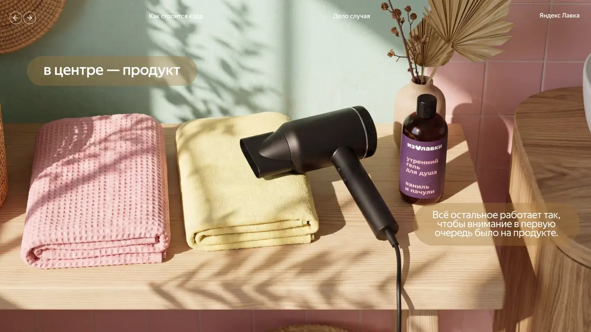

Yandex Lavka · Campaign · Art direction
ДЕЛО
СЛУЧАЯ
Кампания о непредсказуемых бытовых ситуациях, где нужный продукт оказывается рядом именно тогда, когда он необходим.
КлиентЯндекс Лавка
ФорматРекламная кампания
РольArt Direction
НосителиDigital / Outdoor / SMM
О проекте
Случайность становится сюжетом
Коммуникация строится вокруг знакомых моментов: внезапный дождь, неожиданные гости, забытая вещь или срочно понадобившийся продукт.
Визуальная система быстро считывается, остаётся продуктовой и сохраняет лёгкий юмор и динамику сервиса.
Campaign conceptKey visual systemArt direction



NEXT CASE
↗